- matplotlib에서 custom colormap을 만들고 적용하는 방법입니다.
- 3부로 나누어 1부에 해당하는 본 글에서는 시각적 디자인을, 2~3부에서는 코드 위주로 정리합니다.
Matplotlib Custom Colormap
지난 글에는 크게 두 가지 그림이 등장합니다.
- 하나는 value에 따른 컬러맵 명도

- 또 하나는 여러 컬러맵이 적용된 한반도의 풍속 분포 그림입니다.

- 하나는 value에 따른 컬러맵 명도
이번 글에서는 이 그림들 중 두 번째 그림이 그려진 과정을 코드로 살펴보겠습니다.
2. Wind Visualization
- 한반도 풍속 데이터를 가져옵니다.
- 아쉽게도 본 데이터는 공유가 어렵습니다.
- 데이터보다 시각화 코드에 집중해주시면 좋겠습니다.
pandas DataFrame으로 읽어옵니다.1
2
3
4
5
6
7
8
9
10%matplotlib inline
import pandas as pd
import numpy as np
import matplotlib.pyplot as plt
from matplotlib import cm
from colorspacious import cspace_converter
df_wind = pd.read_csv("wind.csv")
df_wind.head()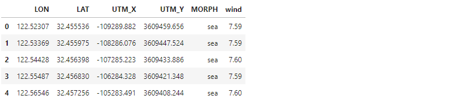
2.1. Distortion: Spherical vs Projection
- X와 Y축으로 사용할 데이터가 두 가지 있습니다.
- 하나는 위도
LAT: latitude와 경도LON: longitude, - 하나는 X좌표
UTM_X와 Y좌표UTM_Y입니다. - 결론부터 말씀드리면 위도와 경도는 지구의 곡면에서 사용하는 좌표계입니다.
- 곡면을 2D에 그대로 그리면 왜곡이 발생하기 때문에 왜곡을 최소화해서 투영시킨 UTM : Universal Transverse Mercator 좌표계를 사용해야 합니다.
- 하나는 위도
두 좌표계를 사용해 그린 한반도 모습을 보면 이해가 빠를 것입니다.
1
2
3
4
5
6
7
8
9
10
11fig, axes = plt.subplots(ncols=2, figsize=(20, 10))
Xs = ["LON", "UTM_X"]
Ys = ["LAT", "UTM_Y"]
for ax, X, Y in zip(axes, Xs, Ys):
ax.scatter(df_wind[X], df_wind[Y], s=1, c=df_wind["wind"], cmap="viridis")
ax.set_title(f"{X} and {Y}", fontsize=24)
ax.grid("on")
plt.show()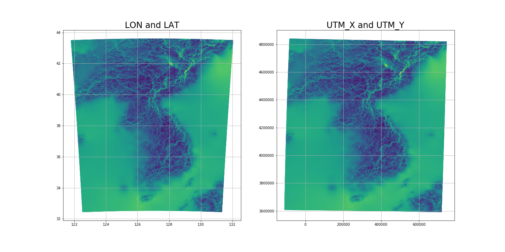
컬러맵으로 도시된 풍속은 차치하고, 먼저 격자무늬를 봅시다.
- 지구는 구형이고 한반도는 북반구에 위치하고 있습니다.
- 따라서 북쪽으로 갈수록 단위 경도의 길이가 짧아져야 합니다.
- 그러나 좌측처럼 위도와 경도로 그리면 이 전제에 위배되어 지도를 그림처럼 왜곡시킵니다.
- 좌측 그림을 보면 북쪽으로 갈수록 점점 넓어지고 있습니다.
2.2. Distortion: Aspect Ratio
matplotlib: Axis Equal Demo
matplotlib.axes.Axes.axis
matplotlib.axes.Axes.set_aspect
- UTM 좌표계를 적용해도 matplotlib에서 왜곡이 발생합니다.
그림 크기가 적절치 않았던 탓에 가로가 세로보다 더 깁니다.
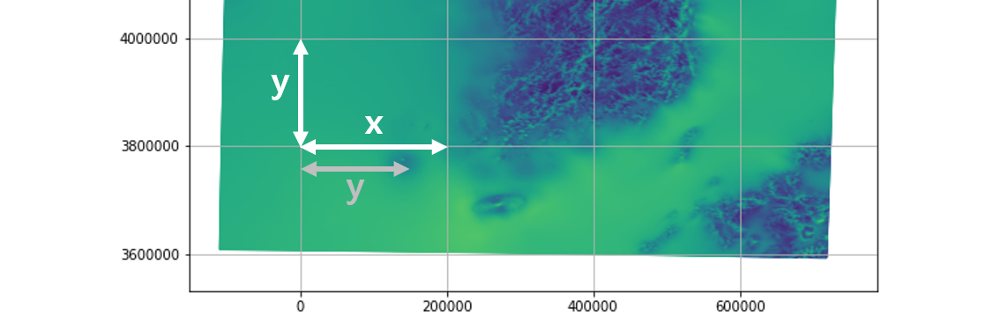
matplotlib에는 그림의 종횡비를 데이터에 맞춰주는 명령이 있습니다.ax.axis("equal"): 종횡비만 맞춰줍니다.ax.axis("scaled"): 종횡비를 맞추고 데이터에 맞게 축공간을 조정합니다.ax.set_aspect("equal", "box"): 종횡비를 맞추고 데이터에 맞게 축공간을 조정합니다.
아래 예시를 통해 확인하겠습니다.
1
2
3
4
5
6
7
8
9
10
11
12
13
14
15
16
17
18
19
20
21# 예제 원 데이터 (반지름=3)
an = np.linspace(0, 2 * np.pi, 100)
X, Y = 3*np.cos(an), 3*np.sin(an)
fig, axes = plt.subplots(ncols=3, figsize=(9, 4))
titles = ["default", "axis('equal')", "axis('scaled')"]
for i, (ax, title) in enumerate(zip(axes, titles)):
ax.plot(X, Y)
ax.grid("on")
ax.set_title(title)
ticklabels = ax.get_xticks()
ax.set_yticks(ticklabels)
if i == 1:
ax.axis("equal")
elif i == 2:
ax.axis("scaled")
plt.show()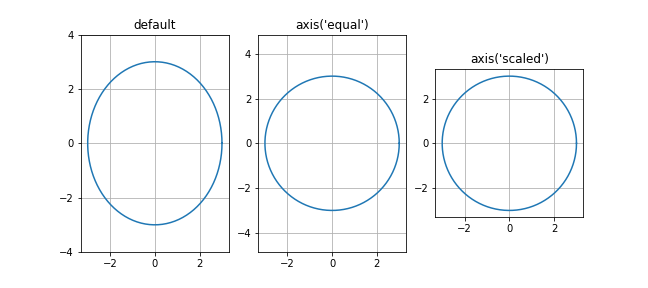
set_aspect()를 사용하면 종횡비 수치 조정이 가능합니다.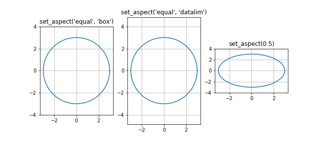
적절한 데이터 표현을 위해
set_aspect("equal", "box")를 적용합니다.1
2
3
4
5
6
7
8
9
10
11
12
13
14# 무의미한 여백을 피하기 위한 데이터 범위 다듬기
df_trim = df_wind.loc[df_wind["UTM_X"] < 700000].loc[df_wind["UTM_X"] > -80000].loc[df_wind["UTM_Y"] < 4800000].loc[df_wind["UTM_Y"] > 3620000]
# 지도 그리기
fig, ax = plt.subplots(figsize=(10, 10))
ax.scatter(df_wind["UTM_X"], df_wind["UTM_Y"], s=1, c=df_wind["wind"], cmap="viridis")
ax.set_aspect("equal", "box")
ax.set_xlim(-80000, 700000)
ax.set_ylim(3620000, 4800000)
ax.grid("on") # 종횡비 설정 확인
plt.tight_layout()
plt.show()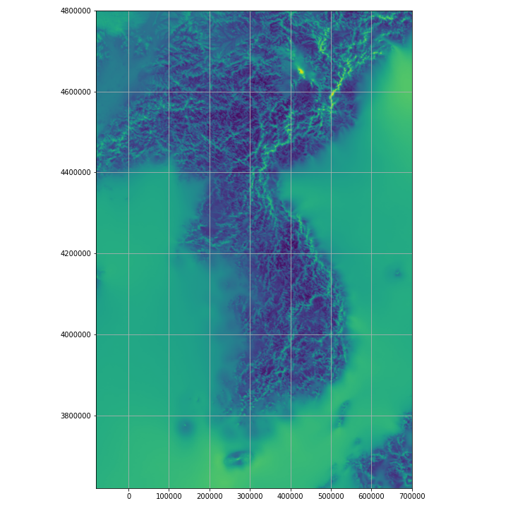
2.3. Axes Aesthetics
- 데이터를 왜곡 없이 표현했으므로 축을 보기 좋게 조정해줍니다.
- grid가 데이터를 가립니다 → 지웁시다
- 윤곽선이 무의미합니다 → 지웁시다
- 데이터의 의미를 알 수 없습니다 → colorbar를 추가합니다.
- 위 사항들을 반영합니다.
1
2
3
4
5
6
7
8
9
10
11
12
13
14
15fig, ax = plt.subplots(figsize=(10, 10))
im = ax.scatter(df_trim["UTM_X"], df_trim["UTM_Y"], s=1, c=df_trim["wind"], cmap="viridis")
ax.set_aspect("equal", "box")
ax.set_xlim(-80000, 700000)
ax.set_ylim(3620000, 4800000)
ax.axis("off") # 윤곽선 삭제
ax.grid("off") # grid 삭제
cbar = plt.colorbar(im, ax=ax) # colorbar 추가
cbar.set_label("wind speed (m/s)", fontsize=24) # colorbar label
cbar.ax.tick_params(labelsize=20) # colorbar 숫자 fontsize
plt.tight_layout()
plt.show()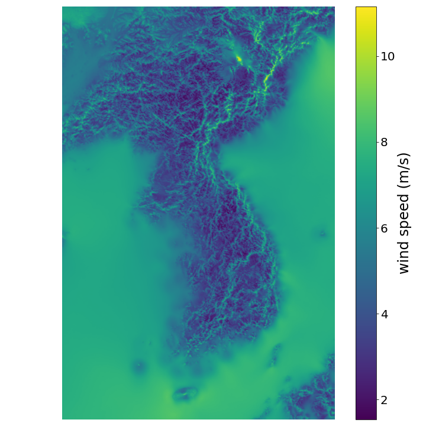
2.4. Data Vision Deficiency
Matplotlib Colormap Customization (1)
Naver: 널리 알리는 기술소식. 색각이상자를 위한 웹 접근성 가이드라인
NoCoffee Vision Simulator
Chromatic Vision Simulator
- 컬러맵이 적절치 않으면 데이터 독해력이 떨어집니다.
- 지난 글에서 여러가지 컬러맵을 적용한 경우를 보았습니다.
- 효과적인 데이터 전달을 위해 데이터를 꾸미기 전에 색각이상자
Color Vision Deficiency들 입장에서 컬러맵이 어떻게 보일지 간접적으로나마 경험해 봅시다. - 색각이상은 남성에게 특히 심한데, 국내 남성의 6%, 전 세계 남성의 8%, 특히 코카서스인(백인)의 11%가 색각이상자라고 합니다.
- 여성 중 색각이상자 비중은 0.5%로 남성에 비해 낮습니다.
- 내 주위에 남성 50명이 있다면 그 중 3~4명은 색각이상을 겪고 있을 수 있습니다.
- Chromatic Vision Simulator를 통해 색각이상자들의 시야를 엿볼 수 있습니다.
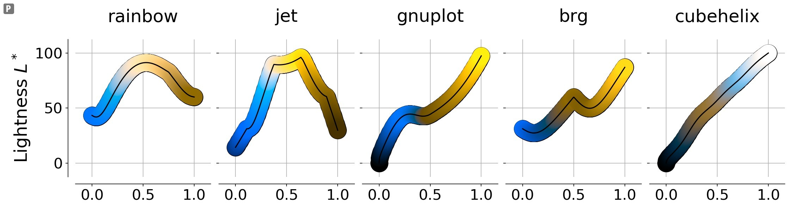
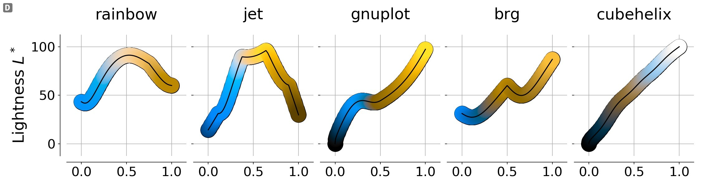
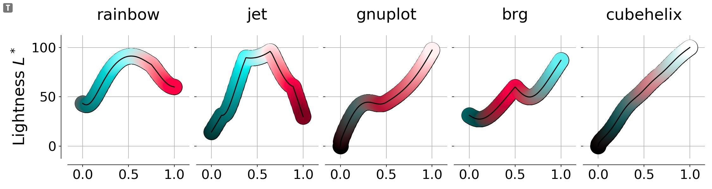
- 데이터와 명도간 상관관계가 강한 cubehelix는 데이터 전달에 지장이 적습니다.
- 하지만 데이터를 주로 색채로 전달하는 다른 컬러맵은 구분이 어렵습니다.
- 사실상 두 개의 색만으로 정보를 전달해야 하므로 데이터 인지가 힘들어집니다.
- 근본적으로 명도에 기반한 정보 전달이 필요한 이유입니다.
2.5. Data Aesthetics
2.5.1 Efficient Color Space
- 색공간을 효율적으로 사용합시다.
histogram으로 데이터 분포를 확인합니다.
1
2
3
4
5
6
7
8
9
10
11fig, ax = plt.subplots(ncols=2, figsize=(8, 4))
ax[0].hist(df_trim["wind"], bins=30)
ax[1].hist(df_trim["wind"], bins=30)
ax[1].set_yscale("log")
ax[0].set_title("histogram(normal)")
ax[1].set_title("histogram(log)")
plt.tight_layout()
plt.savefig("26_ccmap_code2_08.png")
plt.show()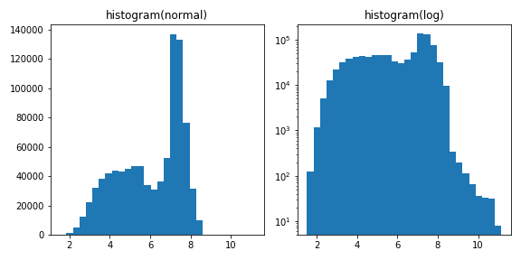
9 m/s 기준으로 데이터를 제한하기로 합니다.
- 그 이상은 일종의 outlier로 간주하여 별도 표시를 합니다.
- 바다도 gist_gray를 적용해서 흑백처리를 합니다.
1
2
3
4
5
6
7
8
9
10
11
12
13
14
15
16
17
18
19
20
21
22
23
24
25
26
27
28
29
30from matplotlib import cm
fig, ax = plt.subplots(figsize=(10, 10))
cmap_ = "viridis"
cmap = cm.get_cmap(cmap_)
cmap.set_over("magenta") # over 색상 지정
# 육지 : viridis
im = ax.scatter(df_trim["UTM_X"].loc[df_trim["MORPH"]!="sea"],
df_trim["UTM_Y"].loc[df_trim["MORPH"]!="sea"], s=1,
c=df_trim["wind"].loc[df_trim["MORPH"]!="sea"], cmap=cmap, vmax=9)
# 바다 : gist_gray
ax.scatter(df_trim["UTM_X"].loc[df_trim["MORPH"]=="sea"],
df_trim["UTM_Y"].loc[df_trim["MORPH"]=="sea"], s=1,
c=df_trim["wind"].loc[df_trim["MORPH"]=="sea"], cmap="gist_gray", vmax=9)
ax.set_aspect("equal", "box")
ax.set_xlim(-80000, 700000)
ax.set_ylim(3620000, 4800000)
ax.axis("off") # 윤곽선 삭제
ax.grid("off") # grid 삭제
cbar = plt.colorbar(im, ax=ax, extend="max") # extend=max 추가
cbar.set_label("wind speed @land (m/s)", fontsize=24, labelpad=12)
cbar.ax.tick_params(labelsize=20)
plt.tight_layout()
plt.show()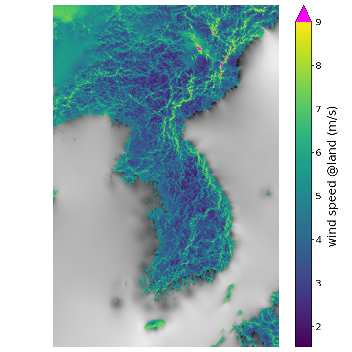
2.5.2. Colormap Customization
Creating Colormaps in Matplotlib
matplotlib.colors.ListedColormap
- 기상청 풍속구간 기준에 맞추어 컬러맵의 색상을 변경합니다.
- 저풍속구간에 Greens_r, 고풍속구간에 Blues_r을 배치합니다.
- 4 m/s 지점을 최대한 정확히 끊어야 합니다.
- Greens_r과 Blues_r을 잘라서 붙입니다.
- 각기 0~1 사이를 256 단계로 쪼갠 후, 85 레벨을 기준으로 잘라서 붙입니다.
- 그냥 붙인 것을 Greens_Blues_1,
- 스케일을 줄여 이동한 것을 Greens_Blues_2라고 이름짓습니다.
- ListedColormap은
numpy.ndarray를 colormap으로 변환합니다. RGBA 4열을 담고 있는 행렬 만든 후 ListedColormap에 담아 새로운 컬러맵을 만들 수 있습니다.
1
2
3
4
5
6
7
8
9
10
11
12
13
14from matplotlib.colors import ListedColormap
from copy import deepcopy
Blues_r = cm.get_cmap("Blues_r", 256)(np.linspace(0, 1, 256))
Greens_r = cm.get_cmap("Greens_r", 256)(np.linspace(0, 1, 256))
boundary = 85
Greens_Blues_1_ = np.vstack((Greens_r[:boundary], Blues_r[boundary:]))
Greens_Blues_1 = ListedColormap(Greens_Blues_1_)
Blues_r_2 = deepcopy(Blues_r)
Blues_r_2[:,:3] = Blues_r_2[:,:3]*0.8+0.2
Greens_Blues_2_ = np.vstack((Greens_r[:boundary], Blues_r_2[boundary:]))
Greens_Blues_2 = ListedColormap(Greens_Blues_2_)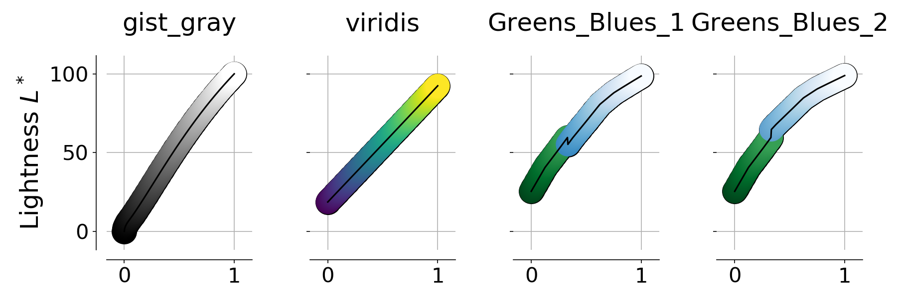
Greens_Blues_1과 _2 생성시 스케일 적용 차이가 반영되었습니다.
- Greens_Blues_1은 일부 명암 구간이 겹치고,
- Greens_Blues_2는 경계에서 명암이 점프하고 있습니다.
- 경계구간 명암 차이로 구간 시인성이 달라집니다.
1
2
3# 위 풍속 시각화 코드에 컬러맵만 다르게 적용합니다.
cmap = Greens_Blues_1
cmap.set_over("magenta")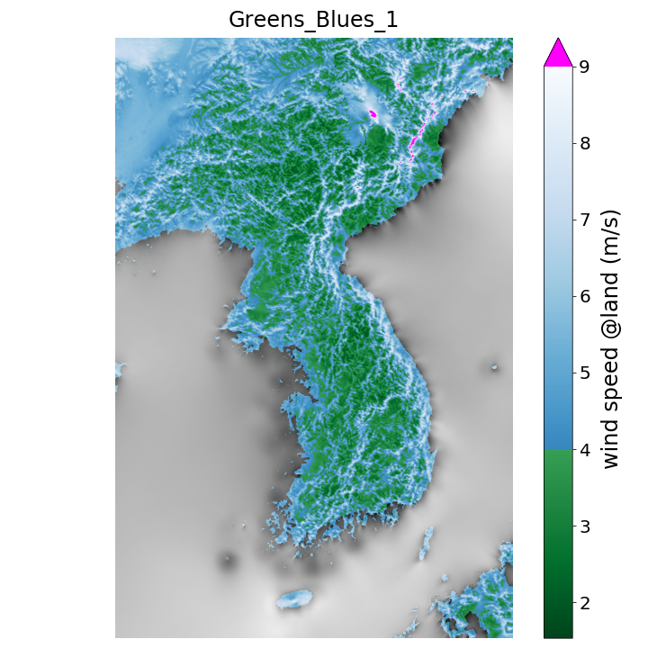
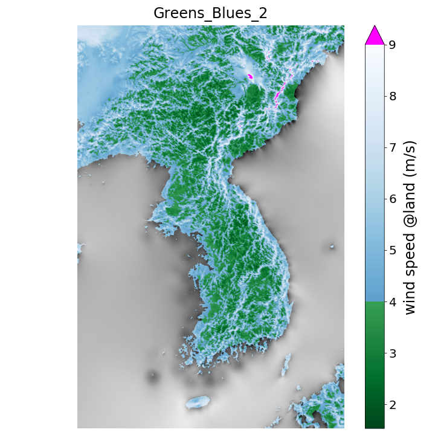
- 평균 풍속이 약한 구간(청색)과 약간 강한 구간(녹색)이 잘 구분됩니다.
- 데이터가 잘 구분되면 시각적 에너지 소모가 적습니다.
- 따라서 더 많은 에너지를 정량적, 정성적 비교에 투입하여
- 추가 분석을 위한 아이디어 발굴, 인사이트 도출에 집중할 수 있습니다.
- 시각화는 집중력을 분배하는 과정입니다.
- 적절하고 빠른 시각화는 본질에 집중하게 해 주지만
- 시각화 과정이 부적절하고 느리면 그 자체로 에너지 손실입니다.
- 본 글에 사용된 코드는 이 곳에서 다운받을 수 있습니다.